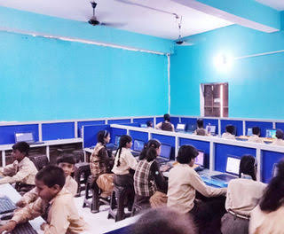
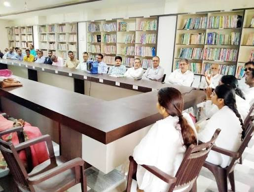
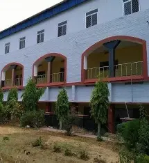
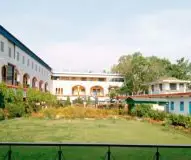
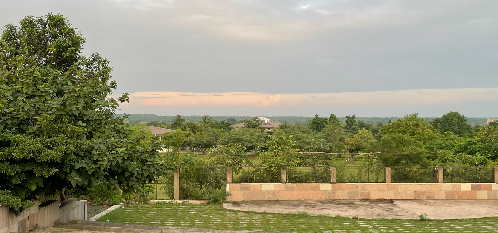
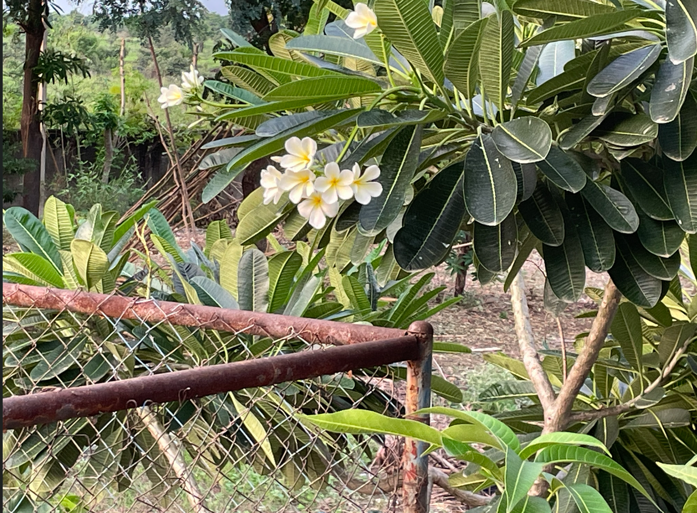
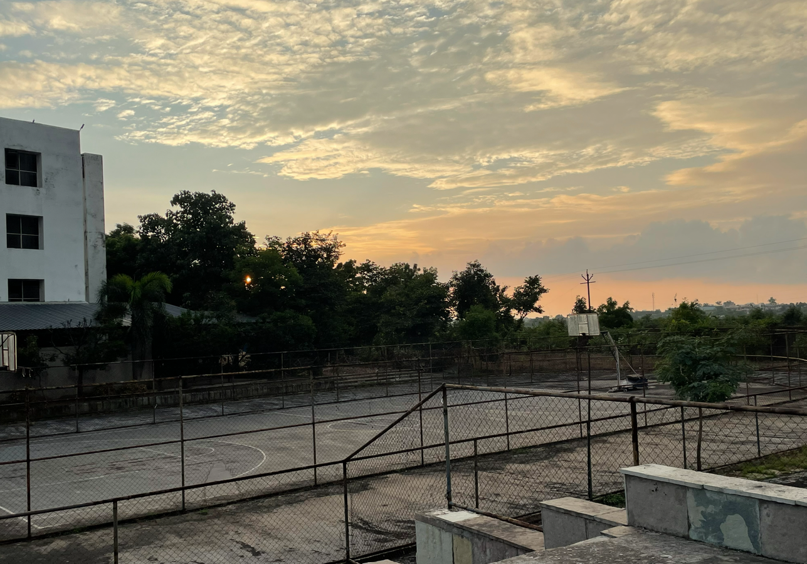
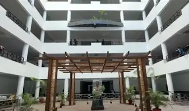

I completed my secondary at PARADISE CHILDREN ACADEMY,located at lalapur, kudra,kaimur(bhabhua) BIHAR.This school provided the foundational academic background in ENGLISH,SANSKRIT,SCIENCE,SOCIAL SCIENCE,COMPUTER & MATHEMATICS .



I completed my higher secondary at SHER SHAH COLLEGE SASARAM,located at sasaram, BIHAR.This college provided the foundational academic background in PHYSICS, CHEMISTRY & MATHEMATICS that shaped my early learing and prepared me for academic pursuits.


Currently,I am pursuing my Bachlor of Technology in Computer Science and Engineering with a specialization in Cyber Securityat TGPCET,nagpur.This program provides a strong foundation in core computing principles while allowing me to delve into specialized domains like network security, cryptography, and threat analysis.
My academic journey is focused on developing technical skills and understanding the latest cyberesecurity protocals to help safeguard digital infrastructures against evolving threats in an increasingly connnected world.




Instagram:@SunnyMaurya_5252
Gmail:sunnymurray789@gmail.com
Thank You